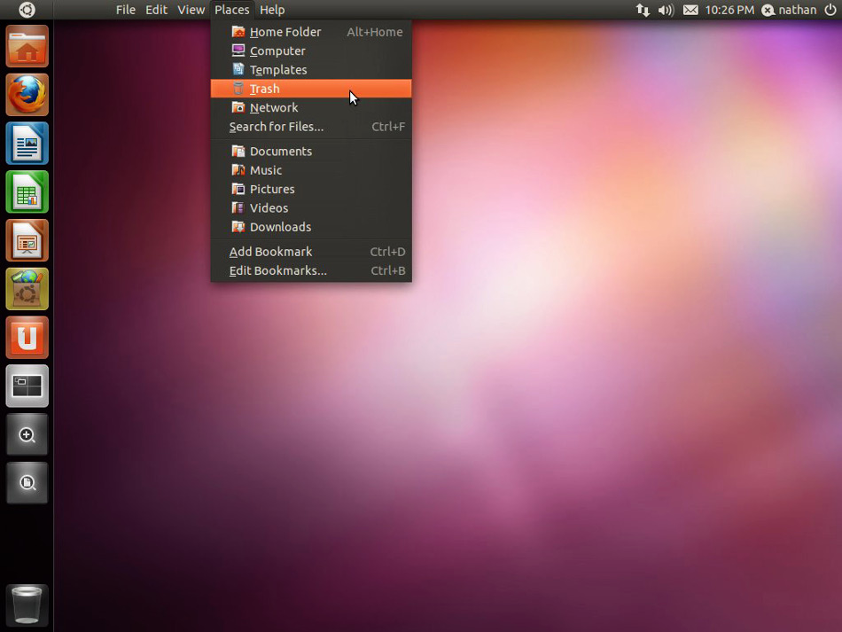

GNU/Linux (pronunciado oficialmente como ñu linux o también ge-ene-u linux en español), es una familia de sistemas operativos tipo Unix compuesto por software libre y de código abierto.GNU/Linux surge de las contribuciones de varios proyectos de software, entre los cuales destacan GNU (iniciado por Richard Stallman en 1983) y el núcleo Linux (comenzado por Linus Torvalds en 1991).
A pesar de que en la jerga cotidiana la mayoría de las personas usan el vocablo Linux para referirse a este sistema operativo, en realidad ese es solo el nombre del kernel o núcleo, que representa menos del 50 por ciento de todo el código del sistema. El sistema completo está formado también por una gran cantidad de componentes del Proyecto GNU junto a componentes de terceros, que van desde compiladores hasta entornos de escritorio. Cabe señalar que existen derivados que usan el núcleo Linux pero que no tienen componentes GNU, como por ejemplo el sistema operativo Android. También existen distribuciones de software GNU donde el núcleo Linux está ausente.
El nucleo del Sistema operativo gestiona todos los procesos vitales y recursos. El nucleo en su mas pura forma es distante del usuario, su misión es a un bajo nivel y muy dificimente el usuario interactúa con el. Pero el nucleo en si no hace alusión a ninguna interfaz gráfica ni programa que de manera básica interactue con el usuario.
Los sistemas operativos GNU/Linux se encuentran normalmente en forma de compendios conocidos como distribuciones o distros. Entre las más populares se encuentran Debian, Ubuntu, Red Hat y SUSE. El propósito de estas distribuciones es ofrecer GNU/Linux como un producto final para instalar o probar en un ordenador, cubriendo una gama de necesidades, las cuales que van desde el uso cotidiano personal hasta aplicaciones muy específicas en ambientes especializados. Al sistema base las distros añaden su propia selección de aplicaciones y programas preinstalados (por ejemplo ambientes gráficos basados en X11, GNOME y KDE), o aplicaciones que pueden descargarse desde un repositorio para su posterior instalación.
Muchos desarrolladores de código abierto están de acuerdo en que el núcleo Linux no fue diseñado, sino que evolucionó a través de una forma de selección natural. Torvalds considera que, aunque el diseño de Unix sirvió como andamiaje, Linux creció con muchas mutaciones, y debido a que las mutaciones eran menos que aleatorias, eran más rápidas y más dirigidas que las partículas alfa en el ADN. Raymond considera que los aspectos revolucionarios de Linux son sociales, no técnicos, antes de que el software complejo de Linux fuera diseñado cuidadosamente por grupos pequeños, pero Linux evolucionó de una manera completamente diferente. Desde casi el principio, fue pirateado de manera bastante casual por un gran número de voluntarios coordinando sólo a través de Internet. La calidad se mantuvo no por estándares rígidos o autocracia, sino por la estrategia ingenuamente simple de publicar cada semana y obtener comentarios de cientos de usuarios en unos días, creando una especie de selección darwiniana rápida sobre las mutaciones introducidas por los desarrolladores. Bryan Cantrill, un ingeniero de un sistema operativo de la competencia, está de acuerdo en que Linux no se diseñó, evolucionó, pero considera que esto es una limitación, y propone que algunas características, especialmente las relacionadas con la seguridad, no se pueden convertir en, este no es un sistema biológico al final del día, es un sistema de software.Un sistema basado en Linux es un sistema operativo modular tipo Unix, que deriva gran parte de su diseño básico de los principios establecidos en Unix durante las décadas de 1970 y 1980. Dicho sistema utiliza un núcleo monolítico, el núcleo Linux, que maneja el control de procesos, las redes, el acceso a los periféricos y los sistemas de archivos. Los controladores de dispositivos se integran directamente con el núcleo o se agregan como módulos que se cargan mientras el sistema está en ejecución.
El proyecto GNU, iniciado en 1983 por Richard Stallman, tiene el objetivo de crear un sistema de software compatible con Unix, compuesto enteramente de software libre. El trabajo comenzó en el año 1984. Más tarde, en 1985, Stallman fundó la Free Software Foundation para financiar el desarrollo de GNU, y redactó la Licencia Pública General de GNU en 1989. A principios de la década de 1990, muchos de los programas que se requieren en un sistema operativo (como bibliotecas, compiladores, editores de texto, un shell Unix y un sistema de ventanas) ya se habían conseguido desarrollar y estaban operativos en el proyecto GNU. Sin embargo, otros elementos, como los controladores de dispositivos y los daemons, estaban todavía en desarrollo e incompletos.
En retrospectiva, Linus Torvalds declaró que si el núcleo del proyecto GNU hubiera estado disponible en 1991, no se habría decidido a desarrollar su propio núcleo. Asimismo, también declaró que si el núcleo 386BSD (del cual NetBSD, OpenBSD y FreeBSD descienden), cuyo desarrollo es anterior al núcleo Linux y que no se liberó hasta 1992 por temas legales, hubiera estado disponible probablemente tampoco lo habría desarrollado.
En 1991, cuando Torvalds asistía a la Universidad de Helsinki y era usuario del sistema operativo MINIX, creado en 1987 por Andrew S. Tanenbaum, y de los programas provenientes del proyecto GNU, estaba muy interesado por el funcionamiento de los sistemas operativos. Frustrado por la concesión de licencias de uso que utilizaba MINIX, que en ese momento se limitaba a uso educativo, ese mismo año decidió comenzar a desarrollar su propio núcleo adoptando la estructura y código del núcleo de MINIX.
Hacia 1992, Torvalds había trabajado tanto en el desarrollo del núcleo Linux que llegó a superar a otros núcleos que se encontraban también en desarrollo en ese momento. Las aplicaciones GNU también se fueron desarrollando de modo que reemplazaron todos los componentes de MINIX, porque era más ventajoso utilizar el código libre del proyecto GNU con el nuevo sistema operativo. El código GNU con licencia bajo la GPL puede ser reutilizado en otros programas de computadora, siempre y cuando también se liberen bajo la misma licencia o una licencia compatible. Posteriormente Torvalds inició un cambio de su licencia original, la cual prohibía la redistribución comercial, y lo difundió bajo la licencia GPL. Los desarrolladores de ambas partes trabajaron para integrar componentes de GNU con el núcleo Linux, consiguiendo un sistema operativo completamente funcional.
Los sistemas operativos GNU/Linux pueden funcionar tanto en entorno gráfico como en modo consola, ya que el entorno gráfico no va explícitamente unido al resto de programas de manejo del sistema y puede usarse de forma opcional. La consola es común en distribuciones para servidores, mientras que la interfaz gráfica está orientada al usuario final, tanto de hogar como empresarial. Asimismo, también existen los entornos de escritorio, que son un conjunto de programas formado por gestores de ventanas, iconos y muchas aplicaciones que facilitan la utilización de la computadora en modo gráfico. Los escritorios más populares en GNU/Linux son: GNOME, KDE Plasma, LXQt, Xfce, MATE y Cinnamon, aunque existen muchos más, también puede usarse con solo los gestores de ventanas, que son la columna vertebral de los entornos de escritorio, y los encargados de dibujar la interfaz de las aplicaciones y la composición.
